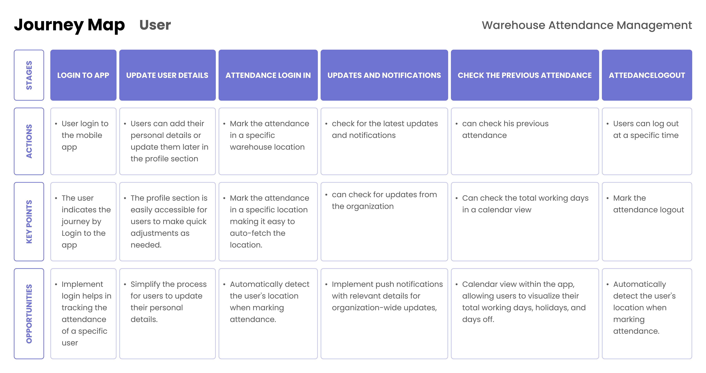
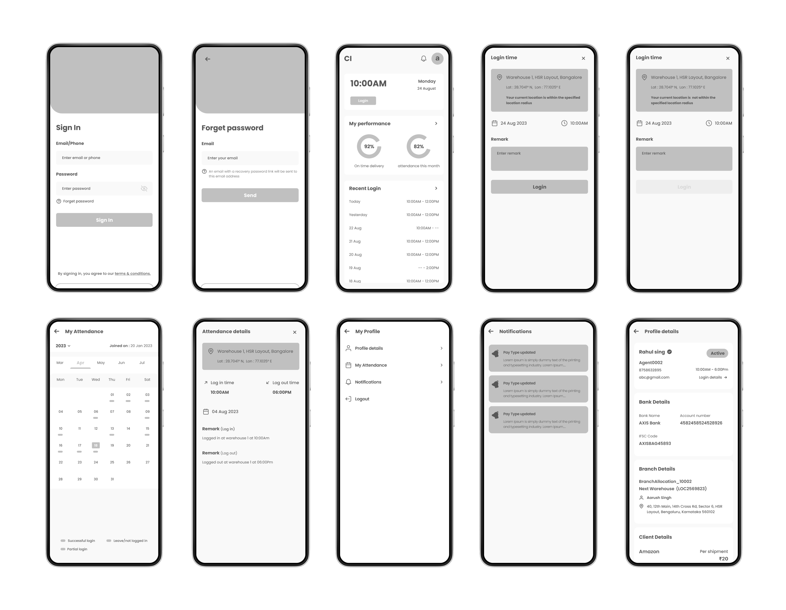
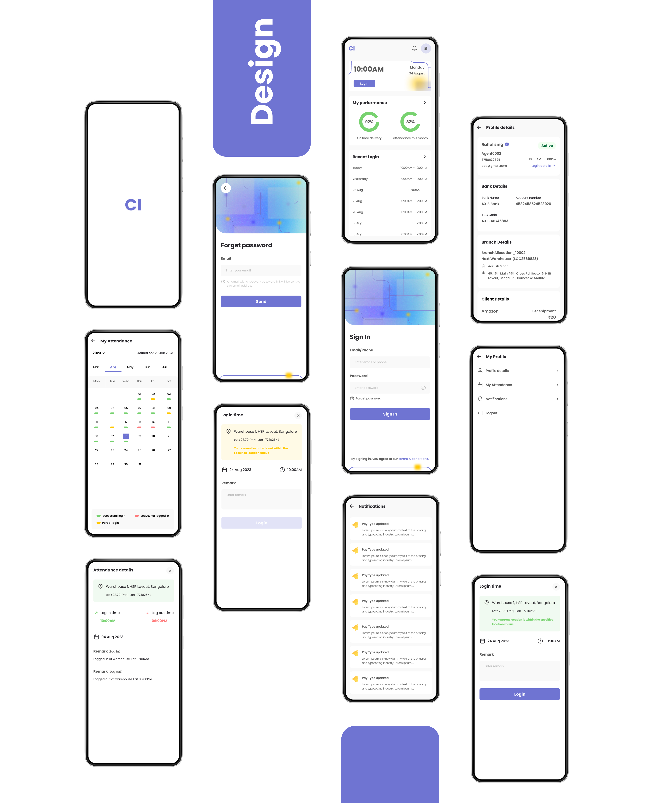

Warehouse Attendance Management
A mobile app designed for a leading logistics company to streamline attendance tracking, integrate notifications, and replace manual processes for warehouse delivery personnel.

Role
UI / UX Design
Timeline
Feb 2023
Tools
Figma, Google Forms, FigJam
Platform
Mobile App
My Contribution
Roles & Responsibilities
Designed a mobile attendance management app for warehouse delivery personnel — conducting user research to uncover pain points and translating findings into a clean, intuitive UI that replaced manual tracking entirely.
Problem
Manual attendance tracking causing inaccuracies and delays
The organisation relied on manual attendance tracking processes that caused inaccuracies and delays. Communication between the company and delivery personnel was inefficient — updates weren't reaching the right people at the right time, and there was no reliable system for tracking who was present, absent, or late.
"The existing process created friction at every step — from logging attendance to receiving organisational updates — leaving personnel frustrated and management in the dark."
The company needed a mobile-first solution that would work for warehouse delivery personnel on the ground — fast to use, easy to understand, and reliable enough to replace manual registers entirely.
01
Research
Listening to the people closest to the problem
Research was conducted directly with warehouse delivery personnel to understand the real pain points — not assumptions from management. A mixed-methods approach was used to gather both qualitative depth and quantitative patterns.
One-on-One User Interviews
Conducted in-person interviews with warehouse delivery personnel focusing on three areas: current log-in/log-out processes and their challenges, how personnel receive organisational updates, and suggestions for communication improvement. Anonymity was maintained to encourage honest feedback.
Survey Distribution via Google Forms
Distributed structured surveys to a broader group of delivery personnel to gather pain points and preferences at scale — identifying patterns in the qualitative interview data and prioritising issues by frequency and intensity of feedback.
Competitive Analysis
Analysed interview transcripts and survey responses for recurring themes. Created user personas reflecting the characteristics and behaviours of warehouse delivery personnel to guide design decisions throughout the project.

02
Design Goals
Three clear objectives to guide every design decision
Streamline Attendance
Replace manual log-in/log-out with a digital, one-click system — reducing time spent and eliminating errors caused by paper-based tracking.
Integrate Notifications
Build a reliable updates and notification system so personnel always receive organisational communications directly and on time.
Intuitive Interface
Design a user-friendly UI that warehouse personnel can navigate confidently — optimised for speed, clarity, and minimal cognitive load.
03
Design
Wireframe, Design & Prototype
The design process moved from low-fidelity wireframes focused on simplicity and clarity, through to a high-fidelity UI using a warehouse-themed colour palette and iconography — all validated through interactive prototyping.
Developed wireframes emphasising simplicity and efficiency in user journeys — with clear navigation structures and logical information presentation tuned to the fast-paced warehouse environment.

Created a clean interface using a warehouse-themed colour palette and iconography — prioritising clarity and readability for quick interactions in high-distraction environments.

- Authentication & Security: A user-friendly authentication process with password reset functionality — secure but frictionless for daily use.
- Home Screen: Notifications display, one-click attendance log-in/log-out, and quick access to the profile section — all above the fold.
- Automatic Location Detection: Detects designated warehouse zones to validate attendance — removing the possibility of remote check-ins.
- Calendar View: A comprehensive attendance calendar so personnel can review their own records at any time without contacting HR.
04
Test & Results
Validated by the people who use it every day
The interactive prototype was tested with warehouse delivery personnel, measuring ease of navigation through the attendance tracking features. Results confirmed the design successfully addressed the manual tracking challenges.
4.2 / 5
Average usability score — "How easy was it to navigate the attendance tracking features?"
Streamlined
Attendance tracking process replacing manual registers — improved efficiency and accuracy
Direct
Organisational updates now delivered in-app — eliminating communication gaps
Next Steps
Continuous improvement beyond launch
Establish continuous feedback loops with warehouse personnel and management to address post-implementation issues as they emerge — and identify opportunities for future iterations and improvements as usage patterns mature.